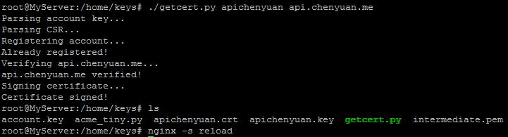

Nginx¶
记录用到的配置，说不定你也能遇到这些特殊需求呢~
Nginx思考题¶
请以批判的眼光阅读以下链接或者自行google，回答以下问题：
http://www.nginx.cn/591.html
-
nginx.conf在你Linux的什么目录下？用什么命令知道的？修改配置后通过什么命令重新载入配置？
-
nginx.conf分为几个部分？我们需要关注的是哪个？
-
nginx.conf中怎么表示注释行？是否留意到include的行载入了额外的配置文件？
-
如何增加一个虚拟主机，根据域名来区分访问不同的网站？访问者直接访问IP或者错误的域名会匹配到默认网站，怎么配置默认网站？
这些是更为进阶/发散的问题：
-
静态内容：root与alias有何区别？访问403了怎么办？
-
动态内容/反向代理：如何做负载均衡、文本替换？
-
全站https和HTTP/2.0怎么配置？
-
Nginx是否有必要作为一个Docker容器运行？CentOS下Nginx镜像很大，怎么减小镜像大小？
-
Nginx的worker进程一般不是root权限的，那是怎么监听到80端口的？
-
Nginx在处理高并发的时候参数如何调优？
-
如何在Nginx层面拦截sql注入、密码爆破等安全风险？VeryNginx
普通资源允许POST¶
error_page 405 =200 @405;
不带后缀的文件当成php执行¶
这里的思路是用反向代理的方式简单实现
location /path/something { proxy_pass http://yourdomain/path/something.php; proxy_method GET; }
顺带拒绝掉对php后缀的猜测：
location = /path/something.php {
if ($remote_addr != '服务器自身IP') {
return 404;
}
include fastcgi.conf;
}
http跳转到https¶
location /{ rewrite ^ https://$host$request_uri? permanent; }
获得Let’s encrypt免费https证书¶
为简化操作，我写了一个更加方便的getcert.py
使用方法：¶
第一步：¶
配置相应网站的nginx conf中的server里面，加入这个：
location /.well-known/acme-challenge {
alias 保存密钥的目录;
try_files $uri =404;
}
记得运行后 nginx -s reload
第二步，运行我的getcert.py（创建私钥并提交申请）：¶
pushd 上述保存密钥的目录 wget https://raw.githubusercontent.com/zjuchenyuan/notebook/master/code/getcert.py ./getcert.py 文件名称 该证书包含的域名列表
例如这样就能获得一张涵盖zjusec.com三个子域名的证书：./getcert.py zjusec zjusec.com,www.zjusec.com,web.zjusec.com
具体来说，这个脚本会自动下载需要的acme_tiny.py和Let’s Encrypt的中间证书，调用openssl创建账号私钥和站点私钥，最终产生 名称.crt 名称.key。

配置安全的https¶
此处参考https://z.codes/ssl-lab-a-plus-configuration-for-nginx/
首先从PPA安装nginx, 这样可以保证最新版
add-apt-repository ppa:nginx/stable apt update apt install nginx
创建DH随机质数：
openssl dhparam -out /etc/ssl/dhparams.pem 2048
创建/etc/nginx/https.conf：
listen 443 ssl http2; add_header Strict-Transport-Security "max-age=31536000" always; add_header Upgrade-Insecure-Requests "1"; add_header Content-Security-Policy "upgrade-insecure-requests"; ssl_dhparam /etc/ssl/dhparams.pem; ssl_stapling on; ssl_stapling_verify on; resolver 8.8.8.8 8.8.4.4 114.114.114.114 valid=60s; resolver_timeout 2s; ssl_protocols TLSv1 TLSv1.1 TLSv1.2; ssl_ciphers 'ECDHE-RSA-AES128-GCM-SHA256:ECDHE-ECDSA-AES128-GCM-SHA256:ECDHE-RSA-AES256-GCM-SHA384:ECDHE-ECDSA-AES256-GCM-SHA384:DHE-RSA-AES128-GCM-SHA256:DHE-DSS-AES128-GCM-SHA256:kEDH+AESGCM:ECDHE-RSA-AES128-SHA256:ECDHE-ECDSA-AES128-SHA256:ECDHE-RSA-AES128-SHA:ECDHE-ECDSA-AES128-SHA:ECDHE-RSA-AES256-SHA384:ECDHE-ECDSA-AES256-SHA384:ECDHE-RSA-AES256-SHA:ECDHE-ECDSA-AES256-SHA:DHE-RSA-AES128-SHA256:DHE-RSA-AES128-SHA:DHE-DSS-AES128-SHA256:DHE-RSA-AES256-SHA256:DHE-DSS-AES256-SHA:DHE-RSA-AES256-SHA:AES128-GCM-SHA256:AES256-GCM-SHA384:AES128-SHA256:AES256-SHA256:AES128-SHA:AES256-SHA:AES:CAMELLIA:DES-CBC3-SHA:!aNULL:!eNULL:!EXPORT:!DES:!RC4:!MD5:!PSK:!aECDH:!EDH-DSS-DES-CBC3-SHA:!EDH-RSA-DES-CBC3-SHA:!KRB5-DES-CBC3-SHA'; ssl_session_cache shared:SSL:10m; ssl_session_timeout 24h; ssl_buffer_size 1400; ssl_prefer_server_ciphers on; keepalive_timeout 600s; location ~* /\.(?!well-known\/) { deny all; } location ~* (?:\.(?:bak|conf|dist|fla|in[ci]|log|psd|sh|sql|sw[op])|~)$ { deny all; } include mime.types;
为需要启用https的站点，在/etc/nginx/sites-enabled/中写入conf文件
server {
listen 443;
server_name 域名1 域名2;
access_log /tmp/access.log;
error_log /tmp/error.log;
ssl_certificate 密钥目录/名称.crt;
ssl_certificate_key 密钥目录/名称.key;
include https.conf
其他配置。。。
}
反向代理之替换网页、JS中的文本¶
使用模块ngx_http_substitutions_filter_module，见Github: https://github.com/yaoweibin/ngx_http_substitutions_filter_module
需要重新编译nginx，Tip: nginx -V命令可以显示当前版本的nginx的编译参数
编译后就可以用啦，举个例子：微信的公众号文章页面为了节省用户流量，图片是把页面滚动至所在位置才加载的，代码上的差异就是img标签本应是src的改成了data-src，这里我们要做一个微信的反向代理网站，把data-src替换成src，则可以直接加载所有图片（唔。。。其实还不够，还需要考虑防盗链的问题）；并且设置MIME类型包含Javascript
subs_filter 需要替换掉的内容 替换后的文本;
subs_filter data-src src;
subs_filter_types application/x-javascript text/javascript appliation/x-javascript;
禁止git目录访问¶
在server块中添加：
location ~ /\. {
return 404;
}
相应的Apache可以在httpd.conf中添加：
RedirectMatch 404 /\.git
root与alias的区别¶
From: http://stackoverflow.com/questions/10631933/nginx-static-file-serving-confusion-with-root-alias
一句话概括，root对应的目录会加上location部分去找文件，而alias则不会
location /static/ {
root /var/www/app/static/;
autoindex off;
}
如果我们这么写，那么访问static目录下的a.jpg就会去找/var/www/app/static/static目录下的a.jpg，如果没有这个static/static就会404
解决方法有两种：
如果location中的static就是真实目录，root中就不要写static了
location /static/ {
root /var/www/app/;
autoindex off;
}
或者用alias就不会再加上location的部分：
location /static/ {
alias /var/www/app/static/;
autoindex off;
}
在bash on win10上使用Nginx¶
与Linux中安装类似，只要apt-get install nginx即可，但可能会发现nginx并不正常工作，日志中是这样的：
[alert] 79#0: ioctl(FIOASYNC) failed while spawning "worker process" (22: Invalid argument)
解决方案：在/etc/nginx/nginx.conf中添加一行：
master_process off;
使上一级服务知道用户IP¶
proxy_set_header realip $remote_addr;
这样设置后，Nginx反向代理上一级服务会加上realip这个头，从而传递用户真实的IP（如果是代理则是代理的IP）
Nginx允许列目录¶
加上autoindex on即可
location / {
autoindex on;
autoindex_localtime on; #显示服务器时间而不是GMT时间
autoindex_exact_size off; #以kB,MB,GB为单位显示大小而不是确切的字节数
}